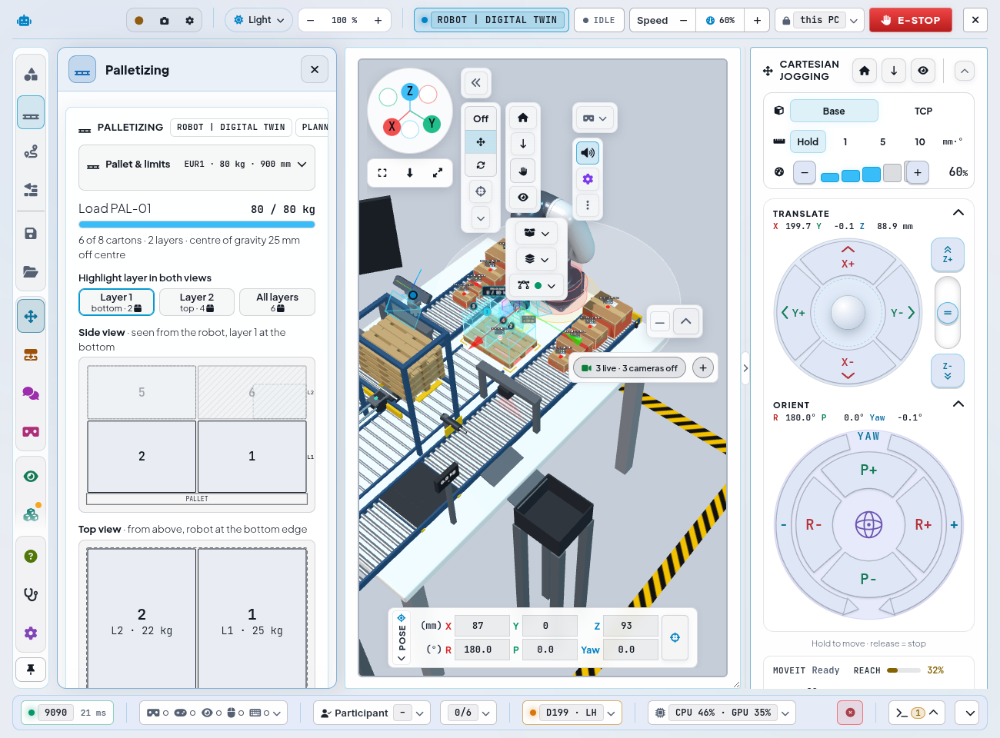

Towards RobotUX: Ein ganzheitlicher Human-Factors-Ansatz zur Diagnose und Verbesserung der Mensch-Roboter-Interaktion
Konfigurierbare multimodale Plattform und explorative Gestaltungsstudie · UX Lab
UX Lab · Hochschule Rhein-Waal
Erklären statt nur messen
Multimodale Roboter-Interfaces, Simulationsumgebungen und menschzentrierte Evaluationsansätze sind weit entwickelt. Studien betrachten die Interaktion aber meist aus einer Perspektive – technisch, behavioral, kognitiv oder erlebnisbezogen – und zeigen damit, dass und wo etwas schiefgeht, selten warum.
RobotUX ist ein ganzheitlicher, interdisziplinärer Human-Factors-Ansatz: Methoden werden je Forschungsfrage gewählt, Evidenz wird je Interaktionsepisode zusammengeführt, und jede Schwierigkeit wird einer Erklärungsebene zugeordnet, bevor eine Gestaltungsänderung folgt. Umgesetzt wird der Ansatz mit der konfigurierbaren multimodalen Plattform UX Robot, gezeigt an einer explorativen Gestaltungsstudie zum robotischen Palettieren.
Eine lange Aufgabenzeit – vier Erklärungen
Interaktionsschwierigkeiten entstehen aus dem Zusammenspiel von Mensch, Interface, Roboterverhalten und Aufgabe.
Roboterarme werden zunehmend von Beschäftigten, Technikerinnen und Servicekräften ohne Robotik-Ausbildung bedient. Sie übersetzen ein Aufgabenziel in räumliche Ziele, Bewegungsbefehle und Bestätigungen und überwachen dabei ein System, dessen innerer Zustand nur teilweise sichtbar ist (Endsley, 1995).
Jeder Eingabekanal bringt eigene Fehlerquellen mit: das Midas-Touch-Problem der Blickauswahl (Jacob, 1990), Erkennungsfehler der Sprache, verdeckte Modi im grafischen Interface.
Ein einzelnes Maß zeigt, dass und wo etwas schiefgeht. Eine lange Aufgabenzeit etwa hat mindestens vier konkurrierende Erklärungen – und jede verlangt eine andere Verbesserung.
Drei Beiträge
Systemunabhängig: Frage vor Methode, Evidenz je Episode und ein expliziter Diagnoseschritt (Abschnitt 3).
Controller, Sprache und Blick, anpassbare Oberfläche, Simulation und Studienmodul – diagnostizierte Änderungen unter vergleichbaren Bedingungen neu testen (Abschnitt 4).
Ein vollständiger RobotUX-Zyklus im simulierten Palettierszenario, von der Erstevaluation bis zur formativen Re-Evaluation (Abschnitte 5 und 6).
RobotUX: ein integrierter Human-Factors-Ansatz
Aufbauend auf menschzentrierter Gestaltung (ISO 9241-210) und ISO 9241-11 – mit dem Schwerpunkt auf dem Erklären statt dem Messen der Interaktionsqualität.
- P1 Frage vor MethodeMethoden werden für die Forschungsfrage gewählt, nicht als feste Batterie angewendet.
- P2 KomplementaritätJede Methode liefert Evidenz, die die anderen nicht liefern: Verhalten, Bewertungen, Aufmerksamkeit oder verbale Erklärungen.
- P3 Episode als AnalyseeinheitEvidenz wird je Interaktionsepisode auf einer gemeinsamen Zeitachse zusammengeführt.
- P4 Erklären vor OptimierenEine Gestaltungsänderung folgt erst, nachdem konkurrierende Erklärungen abgewogen wurden.
- P5 NachvollziehbarkeitJede Empfehlung verweist auf die Evidenz und die Diagnose, auf der sie beruht.
- P6 SystemunabhängigkeitKein bestimmter Roboter, kein bestimmtes Interface, keine bestimmte Modalität; plattformspezifisch sind nur die Schritte 1 und 5.
Methoden folgen der diagnostischen Frage
| Diagnostische Frage | Verhalten / Technik | Subjektiv / verbal | Aufmerksamkeit |
|---|---|---|---|
| Gelingt die Aufgabe, und wie effizient? | Aufgabenerfolg, Bearbeitungszeit, Anzahl der Interaktionen | Single Ease Question | – |
| Wo treten Fehler und Zögern auf? | Ereignisprotokolle, strukturierte Beobachtung | Cued Retrospective Report | Blick auf Areas of Interest |
| Wird ein Systemzustand wahrgenommen? | Zeit bis zur richtigen Handlung nach dem Zustandswechsel | Interview | Fixationen auf Statuselementen |
| Passt das mentale Modell zum System? | Falsche oder wiederholte Handlungen | Lautes Denken oder retrospektiver Bericht, Interview | – |
| Wie beanspruchend ist die Interaktion? | Fehler- und Korrekturrate | NASA-TLX | – |
| Wie wird das Gesamterlebnis bewertet? | – | SUS, UEQ-S, Interview | – |
Die konfigurierbare Forschungsplattform UX Robot
UFACTORY xArm Lite 6 mit Vakuumgreifer, ROS 2 Humble und MoveIt 2 auf einer Workstation.
Kontinuierliche kartesische Steuerung mit vorausschauendem Kollisionsschutz und haptischer Rückmeldung.
Push-to-Talk, eingeschränkte Befehlsgrammatik auf Deutsch und Englisch.
Blicksteuerung ist auf der Plattform vorhanden; in der Studie dient der Blick nur als Messinstrument.
Layout-Vorlagen, Designs und Sprachen; aufgabenorientierte Szenen für reproduzierbare Studien.
Weitere Modalitäten – VR-Teleoperation (Meta Quest 3), Hand-Tracking (Leap Motion) und ein sprachmodellbasierter Assistent – gehören zur Plattform, werden in der hier beschriebenen Studie aber nicht genutzt.
Explorative Gestaltungsstudie: robotisches Palettieren
Bewusst formativ, keine Hypothesen über Effektstärken; je Iteration 8–10 neue Robotik-Neulinge.
- RQ1Welche Interaktionsschwierigkeiten treten auf, wenn Robotik-Neulinge Palettieraufgaben mit der Ausgangskonfiguration bearbeiten?
- RQ2Lässt sich jeder Schwierigkeit eine Erklärungsebene mit mindestens mittlerer Sicherheit zuordnen – und wie oft braucht es dafür übereinstimmende Evidenz aus zwei oder mehr Arten von Datenquellen?
- RQ3Welche Interface-Anpassungen folgen aus den Diagnosen, und verringern sich die adressierten Schwierigkeiten in der Re-Evaluation, ohne dass neue entstehen?
Ein RobotUX-Zyklus im Palettierszenario
- Schritt 1Konfigurieren
Layout-Vorlage Operate, helles Design, Maus und Gamepad; Eye-Tracking nur als Messung. Die Konfiguration wird vor der Datenerhebung eingefroren und versioniert.
- Schritt 2Evaluieren
Aufgaben T1–T4 mit schriftlicher Anleitung, Erfolgskriterium und Zielzeit; Protokolle, Beobachtung, Blick, Fragebögen und Interviews.
- Schritt 3Diagnostizieren
Zuerst eine verblindete Diagnose nur aus Leistung und Protokollen, dann mit allen Daten – so wird sichtbar, was die zusätzlichen Quellen beitragen (RQ2).
- Schritt 4Empfehlen
Je Diagnose eine prüfbare Anforderung, z. B. „der Bestätigungszustand wird innerhalb von zwei Sekunden ohne Suchen bemerkt“.
- Schritt 5Umsetzen
Nur gezielte Interface-Änderungen; Roboterverhalten, Aufgaben und Maße bleiben konstant.
- Schritt 6Re-Evaluieren
Neue Stichprobe, gleiche Aufgaben: Jede Schwierigkeit gilt als behoben, verringert, fortbestehend oder neu (RQ3).

| Aufgabe | Inhalt |
|---|---|
| T1 | Eingewöhnung: Pick & Place mit eingebauter Anleitung (nicht ausgewertet) |
| T2 | Manuelles Umsetzen: Karton vom Band auf eine markierte Palettenposition |
| T3 | Geplantes Palettieren: Auftrag planen und ausführen, Lastgrenze einhalten |
| T4 | Ausnahmebehandlung: auf einen ausgeschleusten Karton im laufenden Auftrag reagieren |
| Methode | Diagnostischer Zweck |
|---|---|
| Protokolle & Leistung | Episoden verorten, technische Fehler erkennen |
| Beobachtung | Zögern, Hilfeanfragen, falsche Handlungen |
| Eye-Tracking | Wurde relevante Information angesehen? |
| SEQ · NASA-TLX · SUS | Schwierigkeit, Beanspruchung, Usability je Iteration |
| Interview | Überlegungen und mentale Modelle (Cued Retrospective) |
Noch keine Ergebnisse
Die Studie ist noch nicht durchgeführt. Abschnitt 6 folgt nach der Erstevaluation und der formativen Re-Evaluation; bis dahin enthält diese Seite keine Zahlen.
Beitrag und Grenzen
Der angestrebte Mehrwert von RobotUX liegt weniger in neuen Instrumenten als in der Art, wie bestehende Instrumente kombiniert und genutzt werden. Die Schleife aus Neugestaltung und Re-Evaluation ist gängige Praxis menschzentrierter Gestaltung; der Beitrag liegt in ihrer Kopplung an die Diagnose je Episode.
RobotUX beansprucht keine Überlegenheit gegenüber anderen Ansätzen. Kleine Stichproben aus dem Hochschulumfeld, eine reine Simulation und die fehlende Kontrollbedingung begrenzen die Aussagen; ob der Ansatz mehr oder bessere Erklärungen liefert als ein üblicher Usability-Test, muss ein kontrollierter Vergleich zeigen.
Auf dem Weg zu übertragbaren Leitlinien
Jeder RobotUX-Zyklus erzeugt Diagnosen, die für eine Nutzergruppe, eine Aufgabe und ein Interface gelten. Über Studien, Systeme und Anwendungsfelder hinweg lassen sich wiederkehrende Diagnosen und wirksame Änderungen zu übertragbaren Gestaltungs- und Evaluationsleitlinien für menschzentrierte Roboter-Interfaces verdichten.
Ausgewählte Quellen
Auswahl aus dem Paper-Entwurf; die vollständige Liste steht im Manuskript.